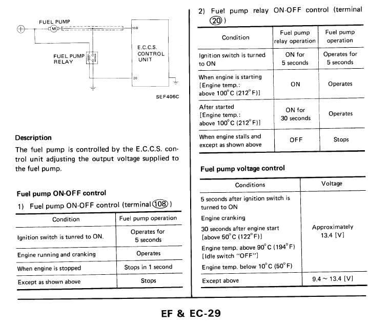

-
Im on my phone, so ill keep this short. I cut the eccs ground control wire. Wired that to 85 terminal on the relay. Use a tap splice to wire the 12v hot to the 86 terminal on the relay. This makes the relay close when the eccs is grounded. On terminal 30 you wire a 10 guage wire to the body. On terminal 87a (normally opened), you wire it to the cut eccs wire going to the pump.
When the eccs sends varied ground to the 86, instead of modulating the pump current, the relay closes its connection- 87 (which is not connected to anything) switches to 87a and the full voltage circuit is made via the ground connection that is made thanks to the relay terminal 30's ground connection. Its essentially the same as sending power to a rad fan, except you're sending ground instead of power via the body instead of the battery.
Make sense?
If the question is "will this work for a wally or higher pressure pump?" Then you need to run a brand new 12v from the battery or another circuit that can take the additional load. -
Thanks Careless, yes absolutely makes sense. What doesn't make sense (to me only probably, I am likely some form of undiagnosed OCD in relation to stuff like this) is that the car now has 2 fuel pump relays. So humor me for a second… The stock relay has 12V hot on the coil and passes straight ground to the pump on the switched side just like what was added with the new relay. It needs ground to switch on, which it gets from the ECCS on the other pin for first 5 seconds etc. So either relay needs to see ground to turn on the pump, is there any problem in connecting the 2 ground sources from the ECCS together on one relay?
Aaaand the other part I'll have to take a closer look at the wire size and if anything else is on the fuel pump's fuse before I comment, but the wally is what I have in mind. The baddest wally on the wally chart claims just 17.0amps at 13.5volts and 130psi though, and 8-12amps at more reasonable pressures. Not so far from the stock 10A fuse. Is the wally chart lying? -
Sorry for kicking a dead horse here, but:
For review, here's the fuel pump wiring as per FSM, skip it if you're familiar:

The fuel pump wiring is 14ga. and fused at 10A. Assuming I'm good with that, does anyone see any problem with doing this (schematic below) instead of adding a second relay as has already been discussed?
-
JeffSly, thanks for posting that. I'm such an idiot, for whatever reason I never saw that page past the first 1/2 online. I need to buy an actual book.
Aside from saftey concerns I can not for the life of me figure out why we want the ECU to control the voltage to the pump. The fuel pressure regulator will adjust on vacuum alone. I think I'm going to just run power from the 10A fuse block as the source, to a standard 3 wire relay and forget pin 108 and 20 alltogether. The reverse grounding is really messing with me.
I'm puting a 300zx harness, MAF, Coil and ECU from an 86 turbo into my 74 260z. -
Because any pump better than the stock one will cook the old ass OE wiring, but not the 10A fuse…JeffSly wrote: Sorry for kicking a dead horse here, but:
For review, here's the fuel pump wiring as per FSM, skip it if you're familiar:
The fuel pump wiring is 14ga. and fused at 10A. Assuming I'm good with that, does anyone see any problem with doing this (schematic below) instead of adding a second relay as has already been discussed?
- VG30DET (HE341) 86 300ZX - 1982 280ZX Turbo - Headered NA 1986 300ZX 2+2 - 2000 Xterra - -
I can't completely argue with this, because I know it's happened, pictures exist etc. Worse my car's nowhere near ready to find out for myself, but the high-flow Walbro's at stock pressure shouldn't exceed 10A by much if anything according to anything I've found ("high-pressure" version: 7.5A @ 13.5V and 40psi flowing 70 gal/hr, for example). Why shouldn't I expect an old ass 14ga wire to stand up to that?michaelp wrote: Because any pump better than the stock one will cook the old ass OE wiring, but not the 10A fuse… -
make sure the wire ends are free from corrosion and cut them back if you're unsure. if it's 14ga wiring it should be ok for that amperage. -
Well since the thread is momentarily revived, I guess that's the part I'm curious about. I'd rather it be 12ga, don't want to rewire for no reason, and really don't want to rewire after the project is a car again. So…ideally I guess I need convincing that the stock wiring, in perfect condition, doesn't handle the current it was fused for, or that the posted numbers for Walbro online are garbage. MikeP, I'll thank you in advance for that so I can shutup and wire it with some headroom.Careless wrote: .... if it's 14ga wiring it should be ok for that amperage.
JSM, since I skipped over your post I would say the safety concerns are valid and if it were me I'd keep the grounding indirectly through the ECU part. By connecting both of those pins to the ground side of a relay coil you'll have full power whenever the pump is supposed to be on (i.e. first 5 seconds only if you don't start the engine, not if you're upside down). -
I think I got it figured out now. I saw MicahelP drawing in another thread that got me the answer I needed to wire in the rellay through the ECU. I'm just not used to the ECU acting as a switch to ground. I think you only want 108 pin, not 20. Pin 20 above is what is regulating the power. I'm just going to leave it cut and unused. It may cause problems to the ECU trying use them together.JeffSly wrote: JSM, since I skipped over your post I would say the safety concerns are valid and if it were me I'd keep the grounding indirectly through the ECU part. By connecting both of those pins to the ground side of a relay coil you'll have full power whenever the pump is supposed to be on (i.e. first 5 seconds only if you don't start the engine, not if you're upside down). -
Take another (closer) look at the FSM page posted above. ECU providing the ground takes a second to get used to I agree, especially when it starts varying the voltage level through that ground reference but pin 108 is the varying one providing voltage reference of 9.4-full. Pin 20 is just on-off ground reference for the relay. The questionable thing to me in the stock 300zx wiring is why there even is a relay, which maybe becomes the important thing for you with the engine swap, so to be perfectly clear: The 300zx has a fuel pump relay in the passenger side b-pillar area behind the door, it's wired to switch on the ground side from pin 20 on the ECU. When that relay sees ground from the ECU it sends chassis-ground to the pump and turns it on full power. During most conditions though, that relay is off and the pump is grounded directly through the ECU on pin 108 with the varying level stuff. Mostly people have ignored the stock relay and pin 20 altogether (leaving it where it is to maybe do it's thing) and made their own fuel pump circuit with relay switching with the ground reference from pin 108 to give the pump full power the rest of the time. I don't know how you're wiring your swap but cutting pin 20 eliminates the stock relay on-off control that Nissan had in there, which might still work. My uneducated guess would be Nissan added that relay and switching function into the ECU after having problems with the direct grounding through the ECU (during hot starts if I'm reading the FSM right), OR the FSM could be a tiny bit wrong and confusing… Long story short, I don't see how using them together as I marked on the drawing could be a problem; both pins would only be providing a ground reference to switch a relay, but I posted it up because the relay existing at all is strange to me.JSM wrote: I think I got it figured out now. I saw MicahelP drawing in another thread that got me the answer I needed to wire in the rellay through the ECU. I'm just not used to the ECU acting as a switch to ground. I think you only want 108 pin, not 20. Pin 20 above is what is regulating the power. I'm just going to leave it cut and unused. It may cause problems to the ECU trying use them together. -
I manipulated the Original 300zx wiring diagram to better show the layout. Pin 108 and Pin 20 have conditional logic. Pin 108 is used at Cold startup and if Pin 20 is cut will always use Pin 108. Pin 20 is used once the car is warmed up. This is when the varrying voltage logic comes into place per the instructions. You might be right be able to connect them together as you show, but I don't think you will not eliminate the varrying voltage because the ECU can perform both test still, cold and hot. It will then automatically varry the voltage.
Addtionally, when you look at the main harness plug from the body, Pin 108 is a very big guage wire, pin 20 is very small guage wire.
Manipulated 300zx wiring harness to show only Fuel Pump:
The route I'm going to try from another thread:
-
14ga. Because Pin 108 sees the full amperage of the pump in stock trim, not through any relay.JSM wrote: Pin 108 and Pin 20 have conditional logic. Yes.
Absolutely not. ECU varies the voltage only by varying the resistance on the way to GROUND on pin 108. The only way the varying voltage happens is if pin 108 is supplying ground to the fuel pump DIRECTLY, no relay.JSM wrote: Pin 20 is used once the car is warmed up. This is when the varrying voltage logic comes into place per the instructions. You have this backwards. Seriously. Pin 20 switches the stock relay, no variability there. Ever.
Really!?JSM wrote: … if Pin 20 is cut will always use Pin 108
JSM wrote: You might be right be able to connect them together as you show, but I don't think you will not eliminate the varrying voltage because the ECU can perform both test still, cold and hot. It will then automatically varry the voltage.
JSM wrote: Addtionally, when you look at the main harness plug from the body, Pin 108 is a very big guage wire, pin 20 is very small guage wire.
Your diagram may work fine I don't know, but it ignores the stock fuel pump relay which, under a few conditions only, may be needed to run the pump full power (and has nothing to do with varying the pump speed!). -
Your're right. I thought one thing and typed it another on the Pin 20. :-? There is no way that it does anything but control the relay. And I understand that pin 108 is what varies the voltage.
Help me undestand why you want both pin 20 and 108 hooked together if they do seperate functions? How would this not confuse the ECU? Also isn't the point of this thead to eliminate the variance of the pump altogether and run at 100% voltage at all times?
You said: "Your diagram may work fine I don't know, but it ignores the stock fuel pump relay which, under a few conditions only, may be needed to run the pump full power (and has nothing to do with varying the pump speed!)."
This is what I wan't! I don't want the voltage varied. -
The way I see it they do the same function just at different times. If I cut pin 108 at the ECU in the passenger footwell and splice it into pin 20, then now both of those wires give possible path to ground to switch the relay and run the pump at full voltage. It can get that ground from either pin and the ECU can only see the current draw of the relay coil, so I don't see an issue with them being joined. Either path to ground works. Either pin closes the relay to give full power to the pump, so the pump has full power anytime the ECU would have had the pump on.JSM wrote: …Help me undestand why you want both pin 20 and 108 hooked together if they do seperate functions? How would this not confuse the ECU? Also isn't the point of this thead to eliminate the variance of the pump altogether and run at 100% voltage at all times?
The possible problem here is that the existing power wiring is undersized. If it isn't, I see the splice of pin 108 into the wiring from pin 20 at the ECU, leaving that wiring intact, as the easiest way to achieve full voltage all the time. -
I see your logic, however, what will prevent the ECU from regulating the voltage if both pins are connected? Why wouldn't the ECU think both are working and adjust accordingly. Also i'd be curious to how the relay will react to getting two different signals to the same spot.JeffSly wrote: The way I see it they do the same function just at different times. If I cut pin 108 at the ECU in the passenger footwell and splice it into pin 20, then now both of those wires give possible path to ground to switch the relay and run the pump at full voltage. It can get that ground from either pin and the ECU can only see the current draw of the relay coil, so I don't see an issue with them being joined. Either path to ground works. Either pin closes the relay to give full power to the pump, so the pump has full power anytime the ECU would have had the pump on.
The possible problem here is that the existing power wiring is undersized. If it isn't, I see the splice of pin 108 into the wiring from pin 20 at the ECU, leaving that wiring intact, as the easiest way to achieve full voltage all the time.

Copyright © 2006–. All rights reserved. Privacy Policy